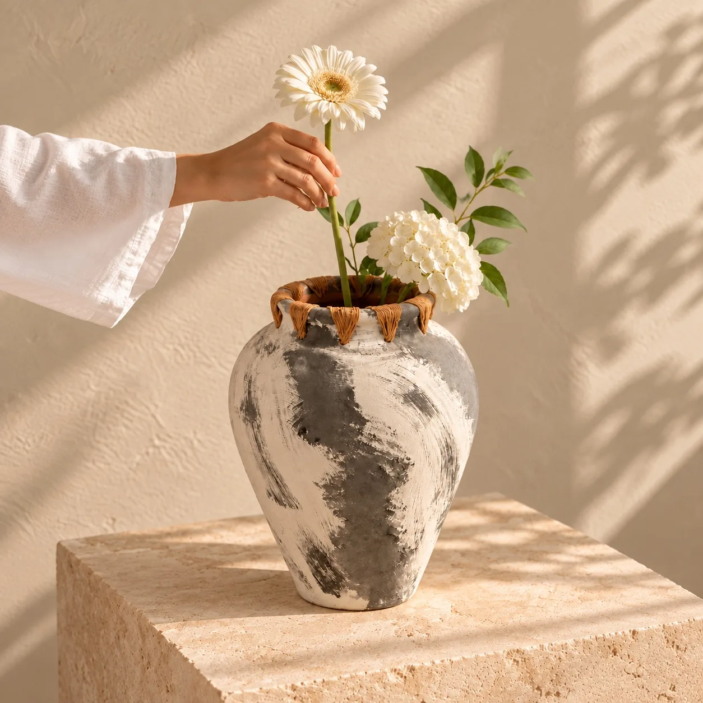
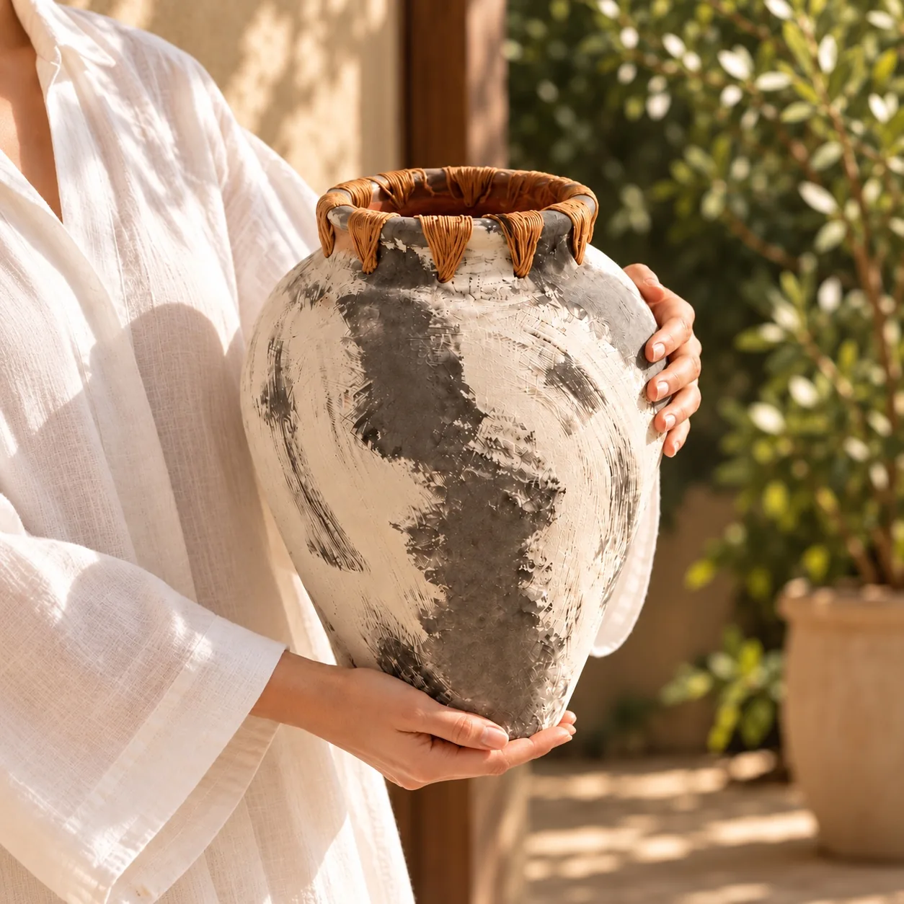
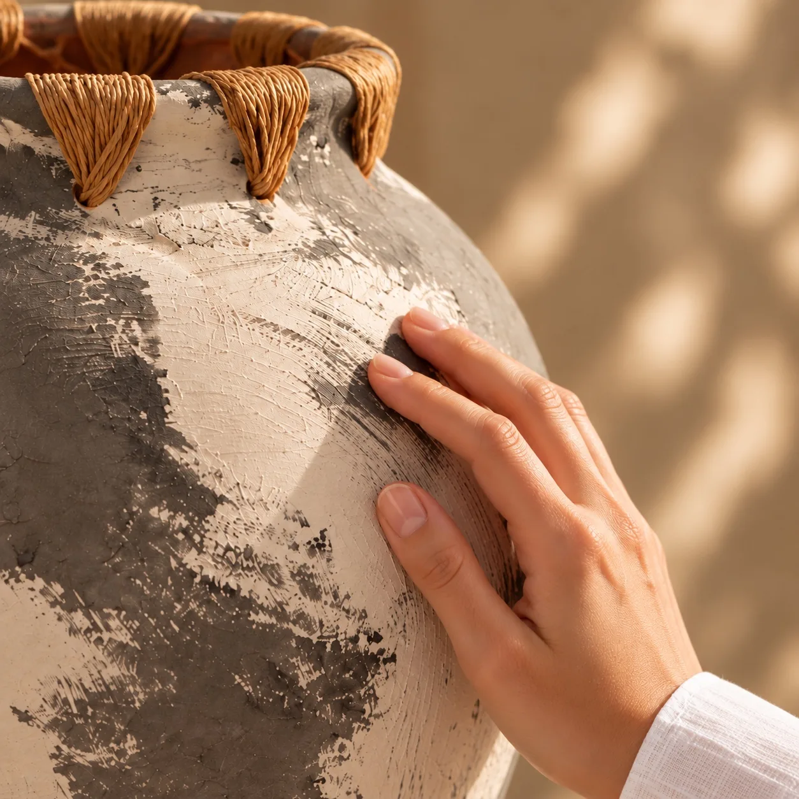
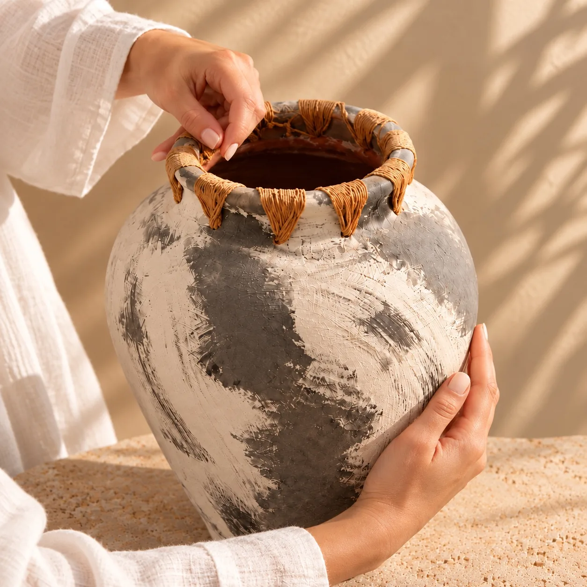

DECOR / INDEPENDENT CONCEPT
A Story in Texture
A quiet visual series exploring a ceramic vase's shape, surface and the moment flowers are arranged in warm light.

PROJECT FILM
A small gesture, a striking detail.
A short promotional film. Playback and sound are in your control.
VISUAL SERIES
One product, different perspectives.



LET'S CREATE TOGETHER
What story could we tell for your product?
Independent concept · No brand collaboration.